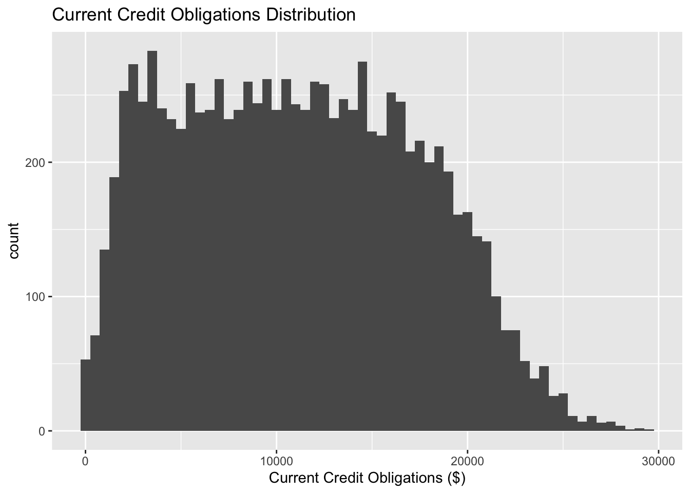

# Load necessary libraries
library(tidyverse)── Attaching core tidyverse packages ──────────────────────── tidyverse 2.0.0 ──
✔ dplyr 1.1.4 ✔ readr 2.1.5
✔ forcats 1.0.0 ✔ stringr 1.5.1
✔ ggplot2 3.5.1 ✔ tibble 3.2.1
✔ lubridate 1.9.3 ✔ tidyr 1.3.1
✔ purrr 1.0.2
── Conflicts ────────────────────────────────────────── tidyverse_conflicts() ──
✖ dplyr::filter() masks stats::filter()
✖ dplyr::lag() masks stats::lag()
ℹ Use the conflicted package (<http://conflicted.r-lib.org/>) to force all conflicts to become errorslibrary(tidymodels)── Attaching packages ────────────────────────────────────── tidymodels 1.2.0 ──
✔ broom 1.0.6 ✔ rsample 1.2.1
✔ dials 1.2.1 ✔ tune 1.2.1
✔ infer 1.0.7 ✔ workflows 1.1.4
✔ modeldata 1.4.0 ✔ workflowsets 1.1.0
✔ parsnip 1.2.1 ✔ yardstick 1.3.1
✔ recipes 1.0.10
── Conflicts ───────────────────────────────────────── tidymodels_conflicts() ──
✖ scales::discard() masks purrr::discard()
✖ dplyr::filter() masks stats::filter()
✖ recipes::fixed() masks stringr::fixed()
✖ dplyr::lag() masks stats::lag()
✖ yardstick::spec() masks readr::spec()
✖ recipes::step() masks stats::step()
• Use suppressPackageStartupMessages() to eliminate package startup messages# Load the data
data_path <- here("starter-analysis-exercise","data", "raw-data", "fin_data.csv")
df <- read_csv(data_path)Rows: 100000 Columns: 18
── Column specification ────────────────────────────────────────────────────────
Delimiter: ","
chr (1): Employment Status
dbl (17): Customer ID, Customer Tenure (years), Deposit Balance ($), Gross M...
ℹ Use `spec()` to retrieve the full column specification for this data.
ℹ Specify the column types or set `show_col_types = FALSE` to quiet this message.# Summary statistics
summary_stats <- df %>%
summarize(
avg_fico = mean(`FICO Score`, na.rm = TRUE),
avg_income = mean(`Gross Monthly Income ($)`, na.rm = TRUE),
avg_obligations = mean(`Current Credit Obligations ($)`, na.rm = TRUE)
)
print(summary_stats)# A tibble: 1 × 3
avg_fico avg_income avg_obligations
<dbl> <dbl> <dbl>
1 699. 3001. 10038.# Create histograms for FICO Score, Current Credit Obligations, and Gross Monthly Income
fico_hist <- ggplot(df, aes(x = `FICO Score`)) +
geom_histogram(binwidth = 10) +
ggtitle("FICO Score Distribution")
income_hist <- ggplot(df, aes(x = `Gross Monthly Income ($)`)) +
geom_histogram(binwidth = 100) +
ggtitle("Gross Monthly Income Distribution")
obligations_hist <- ggplot(df, aes(x = `Current Credit Obligations ($)`)) +
geom_histogram(binwidth = 500) +
ggtitle("Current Credit Obligations Distribution")
# Display histograms
print(fico_hist)
print(income_hist)
print(obligations_hist)